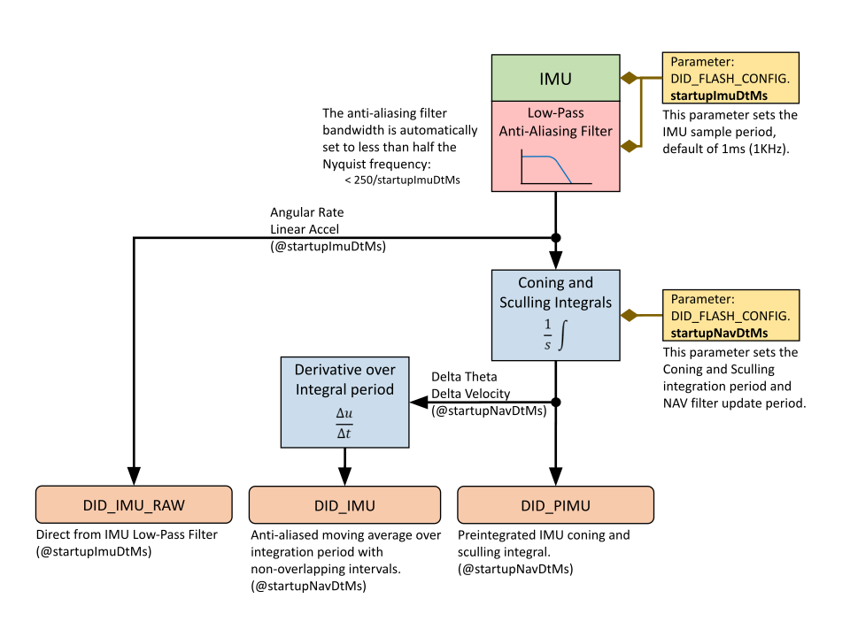
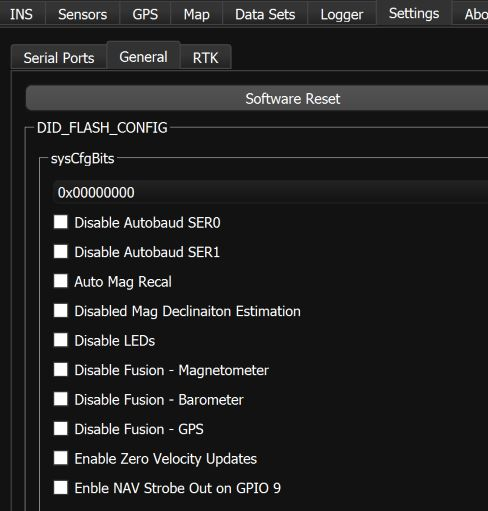

INS & GNSS Configuration¶
Translation¶
The uINS can be mounted and operated in any arbitrary orientation. It is often desirable and conventional to translate the uINS output so that it is rotated into the vehicle frame and located at certain location for control and navigation of the vehicle. This is done using the IMU Rotation, INS Rotation, and INS Offset parameters.
In most common applications, output is translated to the vehicle frame (X to the front, Y to the right, and Z down):
- IMU Rotation provides gross rotation of the IMU output in multiples of 90°.
- INS Rotation provides small angle alignment of the INS output.
- INS Offset shifts the location from the INS output.
IMU Rotation (Hardware Native Frame to Sensor Frame)¶
The IMU rotation is used to rotate the IMU and magnetometer output from the hardware native frame to the sensor frame by multiples of 90°. This is done using the SENSOR_CFG_SENSOR_ROTATION_MASK bits of the DID_FLASH_CONFIG.sensorConfig as defined in enum eSensorConfig. The IMU rotation is defined in X,Y,Z rotations about the corresponding axes and applied in the order of Z,Y,X. This rotation is recommended for gross rotations.
INS Rotation¶
The INS rotation is used to convert the INS output from the sensor frame to the vehicle frame. This is useful if the sensor frame and vehicle frame are not aligned. The actual INS rotation parameters are DID_FLASH_CONFIG.insRotation[3] (X, Y, Z) in radians. The INS rotation values describes the rotation from the INS sensor frame to the intermediate frame in order of Z, Y, X.
INS Offset¶
The INS offset is used to shift the location of the INS output and is applied following the INS Rotation. This offset can be used to move the uINS location from the origin of the sensor frame to any arbitrary location, often a control navigation point on the vehicle.
Manually Aligning the INS After Mounting¶
NOTE for use:
- The Infield Calibration process can be used instead of this process to automatically measure and align the INS with the vehicle frame for INS rotations less than 15°.
- If using software release 1.8.4 or newer, we recommend using the
DID_FLASH_CONFIG.sensorConfigto rotate the sensor frame by 90° to near level before following the steps below.
The following process uses the uINS to measure and correct for the uINS mounting angle.
-
Set
DID_FLASH_CONFIG.insRotationto zero. -
Set the sensor on the ground at various known orientations and record the INS quaternion output (DID_INS_2). Using the Euler output (DID_INS_1) can be used if the pitch is less than 15°. It is recommended to use the EKF Zero Motion Command to ensure the EKF bias estimation and attitude have stabilized quickly before measuring the INS attitude.
-
Find the difference between the known orientations and the measured INS orientations and average these differences together.
-
Negate this average difference and enter that into the
DID_FLASH_CONFIG.insRotation. This value is in Euler, however it is OK for this step as this rotation should have just been converted from quaternion to Euler and will be converted back to quaternion on-board for the runtime rotation.
Infield Calibration¶
The Infield Calibration provides a method to 1.) zero IMU biases and 2.) zero INS attitude to align the INS output frame with the vehicle frame. These steps can be run together or independently.
GNSS Antenna Offset¶
If the setup includes a significant distance (40cm or more) between the GPS antenna and the uINS central unit, enter a non-zero value for the GPS lever arm, DID_FLASH_CONFIG.gps1AntOffset (or DID_FLASH_CONFIG.gpsAnt2Offset) X,Y,Z offset in meters from Sensor Frame origin to GPS antenna. The sensor frame is labeled on the uINS EVB case.
IMU Sample and Navigation Periods¶
The IMU sample period is configured by setting DID_FLASH_CONFIG.startupImuDtMs in milliseconds. This parameter determines how frequently the IMU is measured and data integrated into the DID_PREINTEGRATED_IMU data. DID_FLASH_CONFIG.startupImuDtMs also automatically sets the bandwidth of the IMU anti-aliasing filter to less than one half the Nyquist frequency (i.e. < 250 / startupImuDtMs). The IMU anti-aliasing filter bandwidth can also be overridden to another frequency by setting bits SENSOR_CFG_GYR_DLPF and SENSOR_CFG_ACC_DLPF in DID_FLASH_CONFIG.sensorConfig.

The INS and AHRS kalman filter update period is configured using DID_FLASH_CONFIG.startupNavDtMs. This parameter also sets the integration period for the Preintegrated IMU or conning and sculling (delta theta, delta velocity) integrals. The DID_DUAL_IMU is the derivative of the DID_PREINTEGRATED_IMU value over a single integration period and serves as an anti-aliased moving average of the IMU value.
INS-GNSS Dynamic Model¶
The DID_FLASH_CONFIG.insDynModel setting allows the user to adjust how the EKF behaves in different dynamic environments. All values except for 2 (STATIONARY) and 8 (AIR <4g) are experimental. The user is encouraged to attempt to use different settings to improve performance, however in most applications
the default setting, 8: airborne <4g, will yield best performance.
The STATIONARY configuration (insDynModel = 2) can be used to configure the EKF for static applications. It is a permanent implementation of the Zero Motion Command which will reduce EKF drift under stationary conditions.
Disable Magnetometer and Barometer Updates¶
Magnetometer and barometer updates (fusion) into the INS and AHRS filter (Kalman filter) can be disabled by setting the following bits in DID_FLASH_CONFIG.sysCfgBits.
| Bit Name | Bit Value | Description |
|---|---|---|
| SYS_CFG_BITS_DISABLE_MAGNETOMETER_FUSION | 0x00001000 | Disable magnetometer fusion into EKF |
| SYS_CFG_BITS_DISABLE_BAROMETER_FUSION | 0x00002000 | Disable barometer fusion into EKF |
These settings can be disabled using the General Settings tab of the EvalTool.

Disable Zero Velocity Updates¶
Zero velocity updates (ZUPT) rely on GPS and/or wheel encoder data. In some cases there can be a slight lag/deviation when starting motion while simultaneously rotating. This is because GPS data is updated at 5 Hz and it takes a few samples to detect motion after a period of no motion. When ZUPT is enabled, it acts as a virtual velocity sensor telling the system that its velocity is zero. It may conflict briefly with GPS velocity observation when starting motion. If a slight lag at the beginning of motion is an issue, ZUPT may be disabled. Generally it should be enabled (Default). It can be disabled using DID_FLASH_CONFIG.sysCfgBits or using the General Settings tab of the EvalTool.
Disable Zero Angular Rate Updates¶
Zero angular rate updates (ZARU) rely on analysis of either IMU (gyro) data or wheel encoders when available. When angular motion is very slow and no wheel encoders are available a zero angular rate may be mistakenly detected, which will lead to gyro bias estimation errors. In these cases it can be beneficial to disable ZARU if the applications has slow rotation rates (approximately below 3 deg/s). It is not encouraged to disable ZARU if there is no rotation or faster rotation. It can be disabled using DID_FLASH_CONFIG.sysCfgBits or using the General Settings tab of the EvalTool.